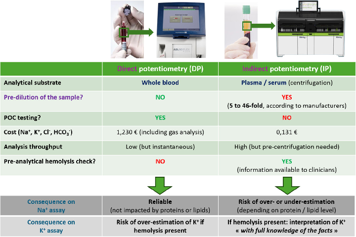
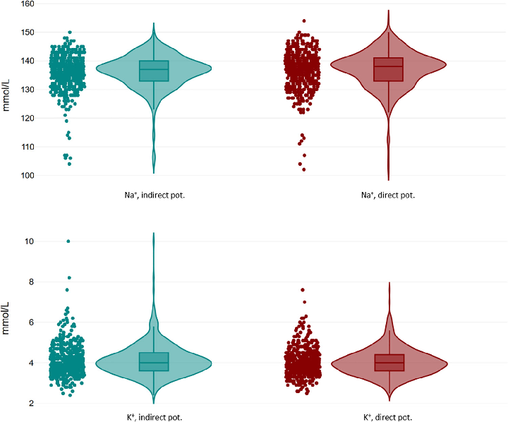
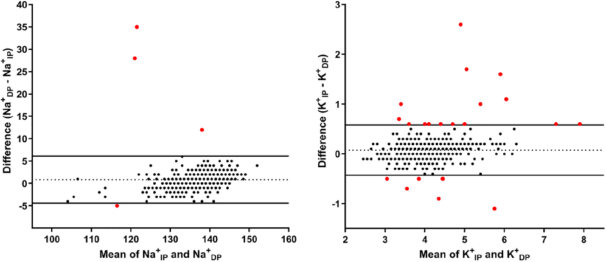

本ページで使用する略語一覧
| 略語 | 正式名称 — 日本語訳 |
| DP | Direct Potentiometry — 直接電位差法（POC血液ガス装置） |
| IP | Indirect Potentiometry — 間接電位差法（中央検査室、希釈あり） |
| POC | Point-of-Care — ポイントオブケア検査 |
| BGA | Blood Gas Analyzer — 血液ガス分析装置 |
| ISE | Ion-Selective Electrode — イオン選択性電極 |
| Na⁺ | Sodium ion — ナトリウムイオン |
| K⁺ | Potassium ion — カリウムイオン |
| Lin's CCC | Lin's Concordance Correlation Coefficient — Linの一致相関係数（1.0が完全一致、0.90以上が「強い」一致の目安） |
| PPV | Positive Predictive Value — 陽性予測値 |
| NPV | Negative Predictive Value — 陰性予測値 |
| H-index | Hemolysis Index — 溶血指数（Alinity分析装置が自動算出） |
| IQR | Interquartile Range — 四分位範囲（25–75パーセンタイル） |
| SAPS II | Simplified Acute Physiology Score II — 重症度スコア |
| IFCC | International Federation of Clinical Chemistry and Laboratory Medicine — 国際臨床化学連合 |
SECTION 1 ICUで電解質測定に「2つの方法」が存在する理由
なぜ2種類の電解質測定法があるのか
ICUでは、Na⁺とK⁺の測定が日常的かつ頻繁に行われる。この測定は主に2つのルートで行われる。ひとつは、中央検査室でのイオン選択性電極（ISE）を用いた間接電位差法（IP）、もうひとつはベッドサイドの血液ガス分析装置（BGA）を用いた直接電位差法（DP）である。どちらの方法もISEを使用するが、測定の前処理と基質（検体）が異なり、それぞれ固有の長所と落とし穴がある。
POC機器は検査室スタッフほどの技術的資格のない要員が操作することが多く、迅速な結果が求められるため、分析方法はどうしても中央検査室のものとは異なる。その結果、POC測定値は「ゴールドスタンダードよりも劣る」と見なされる傾向があるが、Na⁺に関してはこの認識は事実と逆である。
2法の測定原理と特性の違い（Figure 1 概要）
2法の本質的な違いは「希釈するかどうか」にある。
- IP（中央検査室）：血液を遠心分離→血漿を取得→1:24に希釈してISEで測定。タンパク質・脂質濃度が高い場合、希釈に伴う「電解質排除効果（electrolyte exclusion effect）」により、Na⁺が実際より低く（偽性低Na血症）または高く（偽性高Na血症）測定される。溶血は遠心分離後の血漿の外観で検出できる（H-index）。
- DP（血液ガス装置）：全血を希釈なしで直接ISEに通す。希釈がないため、タンパク質・脂質による影響をほとんど受けない。ただし、全血での溶血検出が原理的に困難であり、K⁺の偽性高値（偽性高K血症）が見落とされるリスクがある。
FIGURE 1 直接電位差法（DP）と間接電位差法（IP）の比較

臨床的に問題となる2大シナリオ
シナリオ① — IP（中央検査室）によるNa⁺の偽値：高脂血症・高タンパク血症の患者では、IPがNa⁺を実際より低く報告する（偽性低Na血症）。この干渉を見落とすと、ADH不適合分泌症候群（SIADH）と誤診して水制限→症状悪化という経過をたどりうる。本論文には実際にこの経過で高粘度症候群（Waldenström大細胞症）の確定が36時間遅れた症例が報告されている（タンパク濃度 123 g/L、IPでNa⁺ 123 mmol/L、DPでは正常域）。
シナリオ② — DP（血液ガス）による偽性高K血症：POCで測定した全血サンプルに溶血があっても目視確認できない。溶血があれば細胞内K⁺が漏出し、K⁺が実際より高く報告される。この偽値を見落とすと、存在しない高K血症を治療するか、真の低K血症を見逃す可能性がある。
SECTION 2 研究デザインと患者背景
研究概要
フランス・ポワントワーズ（Hôpital NOVO）の30床ICUを対象に、2024年6月〜10月に前向き観察研究として実施。同一採血から得たIPとDP両方の測定値を501ペア（144人）収集した。
| 項目 | 値 |
|---|---|
| 患者数 | 144人 |
| 男性 / 女性 | 85 / 59（59% / 41%） |
| 年齢（中央値） | 61歳（IQR 51–72） |
| SAPS II（中央値） | 41（IQR 31.7–53.2） |
| ICU入室 | 115人（79.9%） |
| 中間病棟（IMC）入室 | 29人（20.1%） |
| 採血ペア数（Na⁺） | 501ペア |
| 採血ペア数（K⁺） | 498ペア |
| 患者あたり平均採血回数 | 3.5回 |
| 動脈ラインからの採血 | 305 / 501（60.9%） |
| 動脈血（総計） | 468 / 501（93.4%） |
| 静脈血 | 33 / 501（6.6%） |
臓器障害の内訳
| 臓器障害 | 人数（%） |
|---|---|
| 呼吸器（PaO₂/FiO₂ < 200） | 56人（38.9%） |
| 循環器（昇圧剤使用） | 44人（30.6%） |
| 腎臓（KDIGO 3） | 43人（29.9%） |
| 神経（GCS < 7） | 24人（16.7%） |
| 代謝性（乳酸 > 3 mmol/L） | 24人（16.7%） |
| 血液（血小板 < 100 G/L） | 11人（7.6%） |
| 肝臓（Factor V < 50%） | 7人（4.9%） |
| 心臓（EF < 30%） | 5人（3.5%） |
| 人工呼吸管理 | 64人（44.4%） |
除外基準：高度芽球性白血病（芽球 > 40 G/L）の血液疾患患者（自然溶血による偽性高K血症を避けるため）。
使用装置
| 方法 | 機器 | 検体処理 |
|---|---|---|
| IP（中央検査室） | Alinity Ci（Abbott） | ヘパリン血を遠心分離→血漿を 1:24希釈 してISEで測定。H-indexで溶血評価 |
| DP（血液ガス） | ABL90 FLEX（Radiometer） | ヘパリン全血を 希釈なし で直接ISEに通す。溶血の評価は不可 |
SECTION 3 Na⁺測定の一致性 — 「正常域全体を覆う」乖離
Na⁺の分布と統計的一致性
501ペアのNa⁺測定において、DPはIPよりも有意に高い値を示した（中央値：Na⁺DP 138 vs Na⁺IP 137 mmol/L、p < 0.0001）。差は小さいが、個々の症例レベルでの乖離は臨床的に大きな問題となりうる。
（正常域幅 10 mmol/L の≒100%！）
（95% CI: 0.882–0.915）
（正常 / 低値 / 高値で分類が異なる）
臨床的なポイント：Na⁺の正常域は135–145 mmol/L（幅10 mmol/L）である。一方、2法の95%一致区間の幅が10.48 mmol/Lであるということは、個々の測定では正常域全体に相当するほどの差が生じうることを意味する。たとえばIPでNa⁺ 136 mmol/L、DPでは144 mmol/Lという組み合わせが理論上は95%区間内に収まってしまう。
Bland-Altman解析では、平均バイアスが0.85 mmol/L（DPがIPより高め）、95%一致区間は −4.38〜+6.10 mmol/L であった。区間外の外れ値は4点のみだが、区間の幅そのものが問題である。
FIGURE 2 Na⁺・K⁺の測定値分布（各測定法別バイオリンプロット）

SECTION 4 K⁺測定の一致性 — 溶血による方向の逆転
K⁺の分布と統計的一致性
498ペアのK⁺測定においても、DPとIPで有意差があった（K⁺DP 4.0 vs K⁺IP 4.0 mmol/L中央値は同一だが p < 0.0001）。一致区間の幅はNa⁺ほど極端ではないが、K⁺の正常域（3.5–5.0 mmol/L、幅1.5 mmol/L）の約66%に相当する幅があり、臨床的には十分に問題となる。
（正常域幅 1.5 mmol/L の≒66%）
（95% CI: 0.916–0.939）
（低値 / 正常 / 高値で分類が異なる）
平均バイアスは0.07 mmol/L（IP − DP）と非常に小さく、95%一致区間は −0.43〜+0.58 mmol/Lであった。ただし21点が区間外にあり（Na⁺の4点と比べて多い）、特に高K側の外れ値が顕著であった。
FIGURE 3 Bland-Altmanプロット — Na⁺（左）とK⁺（右）

一致性解析の要約（Table 2）
| パラメータ | Na⁺ | K⁺ |
|---|---|---|
| 中央値 DP（mmol/L） | 138（133–141） | 4.0（3.6–4.4） |
| 中央値 IP（mmol/L） | 137（133–140） | 4.0（3.6–4.5） |
| p値（Wilcoxon） | < 0.0001 | < 0.0001 |
| 平均バイアス（mmol/L） | +0.85（DP高め） | +0.07（IP高め） |
| 95%一致区間（mmol/L） | −4.38 〜 +6.10 | −0.43 〜 +0.58 |
| 95%一致区間の幅 | 10.48 mmol/L | 1.01 mmol/L |
| 一致区間外の点数 | 4点 | 21点 |
| Lin's CCC（95% CI） | 0.90（0.882–0.915） | 0.93（0.916–0.939） |
Spearman相関係数（強い相関）：Na⁺ r = 0.936（95% CI: 0.924–0.946）、K⁺ r = 0.944（95% CI: 0.933–0.953）。相関が強くても一致性は中等度である点に注意。
SECTION 5 Na⁺乖離の主因：血清タンパク質濃度
ICUにおける低タンパク血症の高頻度と影響
ICU患者においては低タンパク血症が非常に頻繁にみられる。本研究では総タンパク濃度が高いほど（Na⁺DP − Na⁺IP）の差が大きくなることを確認した（分散分析 p < 0.0001）。すなわち、タンパクが高い（高タンパク血症）とIPがNa⁺を過小評価し、タンパクが低い（低タンパク血症）とIPがNa⁺を過大評価する。
の割合（本研究のICU検体）
（総タンパク < 45 g/L）
（DPを基準とした場合）
IPによる低Na血症診断のNPVは96.8%、高Na血症診断のPPVは100%、NPVは94.7%であった。
PPV 84.7%の意味：IPがNa⁺低値（< 135 mmol/L）を示しても、その15.3%はDPでは正常（偽性低Na血症）である。本研究のICU集団では低タンパク血症が52.7%と高頻度のため、この数値はさらに実臨床に近い。
分類乖離の内訳（Table 3）— Na⁺
分類乖離（低値・正常・高値で2法の結論が異なる）の詳細を以下に示す。DPを基準として正常域をどう扱うかを確認する。
| DP（基準） | IP正常 | IP低値（<135） | IP高値（>145） |
|---|---|---|---|
| DP正常（n=322） | 298（92.5%） | 24（7.5%） | 0 |
| DP低値（n=144） | 11（7.6%） | 133（92.4%） | 0 |
| DP高値（n=35） | 26（74.3%） | 0 | 9（25.7%） |
合計乖離：61 / 501（12.2%） — DPで正常だがIPで低値が24例、DPで低値だがIPで正常が11例など。特に注目はDPで高Na（>145）と判断した35例のうち26例（74.3%）はIPでは正常域に収まっており、IPが高Na血症を見落としやすいことを示す（低タンパク血症がNa⁺を過大評価するため）。
SECTION 6 K⁺乖離の主因：溶血 — そしてIPのほうがより溶血しやすい
溶血（H-index）の影響とその非直感的な方向性
溶血（H-index ≥ 0.5）を認めた検体は全体の6.5%（33 / 501）であり、文献上の動脈血での溶血発生率（最大18.1%）と比較して低かった。これは動脈ラインからの採血が60.9%を占め、採血時の溶血リスクが低かったことを反映する。
の検体割合
（IP側がより溶血が進行）
（K⁺IP − K⁺DP）
直感に反するポイント：「DPは全血なので溶血していればK⁺が上がる」と思いがちだが、実際は溶血検体の87%でIPのほうがK⁺が高かった。これは、IP側では①採血後の分析開始まで時間がかかる（遠心分離の待機）、②遠心分離の機械的力そのものが溶血を促進するためと考えられる。つまりIP側でより溶血が進んでK⁺が高くなっていた。
溶血なし検体でDP > IP のケース
一方、溶血がないにもかかわらずK⁺DP > K⁺IP（差 ≥ 0.3 mmol/L）だった例が25検体（5%）あり、平均差は0.42 mmol/L（最小0.3、最大1.1 mmol/L）であった。これらは全例H-index < 0.5（溶血陰性）であり、溶血以外の機序によるDPのK⁺上昇（例：採血前の指または採血部位のうっ血など）を示唆する。
なお静脈採血（n=33）と動脈採血（n=468）で溶血率（H-index中央値：0.03 vs 0.04、p=0.81）およびK⁺の乖離（ΔK⁺DP–IP 中央値：0 vs −0.1、p=0.33）に有意差はなかった。
分類乖離の内訳（Table 3）— K⁺
| IP（基準） | DP正常 | DP低値（<3.5） | DP高値（>5.0） |
|---|---|---|---|
| IP正常（n=366） | 346（94.5%） | 18（5.0%） | 2（0.5%） |
| IP低値（n=83） | 15（18.1%） | 68（81.9%） | 0 |
| IP高値（n=48） | 15（31.2%） | 0 | 33（68.8%） |
合計乖離：50 / 497（10.1%） — 特にIPで高K（>5.0）とした48例のうち15例（31.2%）はDPでは正常域：これはIPにおける溶血によるK⁺過大評価を反映する。また、IPで低K（<3.5）の83例のうち15例（18.1%）はDPでは正常：DPがK⁺を過大評価（全血での溶血）している可能性を示す。
SECTION 7 医師103人の認識調査 — 正しく理解している医師は少ない
調査結果の概要
POC電解質パネルを日常診療で使用する医師103人を対象に簡易アンケートを実施。結果は驚くほど知識の不足を明らかにした。
解釈：Na⁺についてはIPの限界を知っていた医師は3人に1人以下。K⁺については約半数がDPをIPと同等に信頼可能と考えていたが、これは溶血非検出の問題を無視した誤った理解である。医師への教育介入が測定法の誤用防止に不可欠である。
SECTION 8 考察と臨床提言 — どちらを使うべきか
権威性バイアス（Authority Bias）という落とし穴
本論文が指摘する重要な概念として「権威性バイアス」がある。DPがNa⁺を正常と示しても、「中央検査室（IP）のほうが信頼できる」という思い込みから、医師がDPの正常値を疑って確認検査を重ねるケースが起こりうる。実際に提示された症例では、ICU医師がDPのNa⁺正常値を「信用できない」と言い再検査を要求した。
IFCCは20年以上前から、特に異常なタンパク質・脂質濃度を持つ患者ではDPがより正確で臨床的に適切な方法として推奨している（Clin Chem Lab Med 2000）。にもかかわらず、IPが「本物の検査室の方法」として権威的に扱われ続けている現状がある。
臨床提言：Na⁺はDP、K⁺はIPを優先する理由
- 希釈がないためタンパク質・脂質の影響を受けない
- ICUでは低タンパク血症が52.7%と高頻度
- IFCCが20年以上前からDPを推奨
- 特に異常なタンパク/脂質濃度を持つ患者で有用
- H-indexで溶血を客観的に検出できる
- 溶血があれば結果を自動的に「要注意」と判断可能
- DPは全血での溶血非検出が根本的な限界
- 溶血時の偽性高K血症リスクを排除できる
重要な留意点：DPはガス分析と電解質パネルが切り離せない設計（同一測定）のため、Na⁺のためだけにDPを単独で追加注文することは本施設では不可能（コストはIPの約10倍）。実際には同一血液ガス採血でNa⁺をDPから読み、K⁺はIPから確認するという複合的な判断が求められる。
POCの次世代技術 — 溶血検出の革新
K⁺のDPにおける最大の限界は全血での溶血非検出である。この課題に対し、近年以下の技術的進歩が報告されている：
半自動溶血検出デバイス：BGA実施前に全血から溶血を半自動で検出する専用デバイスが実用化されつつある（Duhalde et al. 2019）。煩雑な遠心分離を不要とする。
次世代BGA内蔵技術（音響流体デバイス）：音響力を用いたマイクロ流体チップ（acoustofluidic flow cell）が血液細胞を局所分離し、遠心分離なしで血漿の溶血光度測定をBGAと同時に実施できる（Balasubramanian et al. Clin Chem 2024）。これが普及すれば、DPのK⁺信頼性が大幅に向上する。
SUMMARY 論文のキーメッセージ
出典：Nakhil N, Najem S, Driss R, Chaabouni T, Dufour N. Discrepancies Between Point of Care and Central Laboratory Sodium and Potassium Measurements in ICU: Analytical Biases and Physician Awareness. Critical Care Medicine. 2026 May;54(5):1092–1102.
DOI：https://doi.org/10.1097/CCM.0000000000007039
本資料は教育目的で作成したサマリーです。診断・治療方針の決定には必ず原典を参照してください。
制作：ICU 関谷